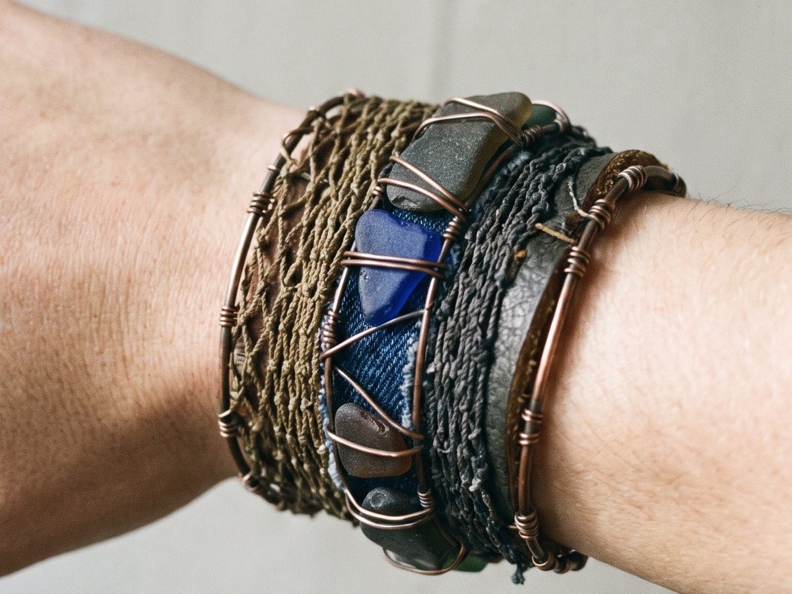

Meet the independent creators behind the label. Click "Read more" to open a story.
Shoreline Studio: the beach as a supplier
November 2026 · by Joseph

In Marseille, Léa collects sea glass on the beach and copper wire from electricians' offcuts. Each cuff is wrapped by hand, one at a time.
Her audit gave her 5 out of 5 for materials: nothing in her bracelets is new. Her weakest point was transparency, because some of her wire had no known origin. She now keeps a notebook for each batch.
Since she joined the directory, customers from other cities find her when they look for jewelry on EcoWear.
Studio Retaille: nothing is thrown away
November 2026 · by Joseph
In the Croix-Rousse district of Lyon, Karim turns the offcuts of three textile workshops into pouches and bags.
Every pouch is different, because it depends on the offcuts of the week. His zips come from the stock of a haberdasher that closed down.
The audit asked him to improve his repair offer: he now repairs every pouch for free during its first year.
Indigo Second: five pairs of jeans, one jacket
October 2026 · by Joseph
Camille collects old jeans in Lyon and cuts five pairs to make one jacket. With 26 out of 30, Indigo Second has our best score so far.
Each jacket has a small label inside that lists the jeans it was made from, so its owner knows its whole story.
Camille now takes back old jackets to repair or rework them, which earned the workshop its points for end of life.